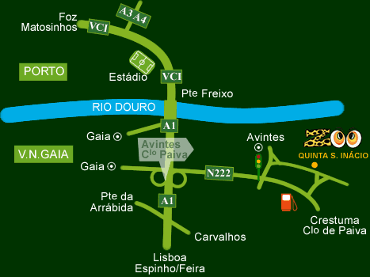
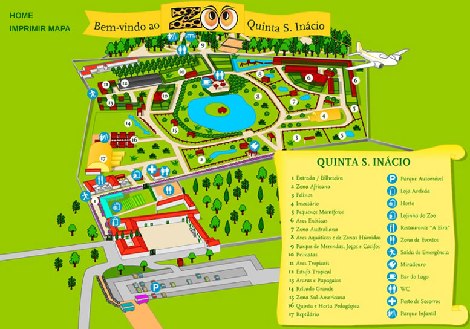
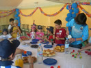

Sobre nós
Park&Zoo S.Inácio nasceu na Quinta de Santo Inácio no dia 10 de Junho de 2000. Começou a ser conhecido por quinta de Santo Inácio, mas depressa verificámos que o nome da Quinta não era o mais adequado. De facto, os nossos visitantes comentavam sempre: "Isto é um Zoo, não é apenas uma quinta como pensávamos". Pois é mesmo um Zoo, daí a mudança de nome, de Quinta de Santo Inácio passou a ser o Park&Zoo S.Inácio (que engloba o Zoo, os Jardins e Bosque, e a Casa-Museu). Assim sendo, a Quinta de Santo Inácio, compreende o Park&Zoo S.Inácio e o Restaurante da Quinta.
- Sabia que pode apadrinhar um animal no Park&Zoo S. Inácio?
- Oportunidade única de observar de perto o comportamento das aves de rapina e répteis acompanhado de comentários sobre os hábitos e caracteristicas
- Actividades pedagógicas desenvolvidas pelo Park&Zoo S. Inácio
Pode ajudar-nos a salvar Madagáscar!
Saiba ComoGastronomia
O Park & Zoo S.Inácio dispõe de vários equipamentos e opções gastronómicas a preços acessíveis. A Eira, localizado numa antiga casa da Quinta, é um restaurante self- service, vocacionado para servir refeições rápidas, embora sem descurar da sua qualidade.
Self-Service "A Eira"
Possui dois espaços exteriores muito agradáveis para desfrutar de uma refeição ao ar livre e uma sala no artigo do celeiro, onde poderá apreciar a sua refeição confortavelmente.
Bar do Lago
No Bar-Esplanada do Lago poderá tomar uma bebida ou comer uma refeição ligeira ao ar livre enquanto contempla as aves aquáticas e a paisagem magnífica porém e se preferir, poderá apreciar a sua refeição através do nosso amplo parque de merendas.
Demonstrações
Oportunidade única de observar de perto o comportamento das aves de rapina e répteis acompanhado de comentários sobre os hábitos e caracteristicas...
Equipa
Estes são alguns dos nosso profissionais que fazem com que o nosso parque seja uma das melhores atrações de Portugal, segundo o TripAdvisor.
Carlos Vicente
CEO do ParqueSelma Carvalhal
Serviços VeterináriosLuís Silva
Técnico de Instalações e Logística do ParqueCristina Pinto
Acompanhante p/Marcação de Visitas de Grupos EscolaresPreçário
Esta secção do nosso site serve para mostrar os nosso preços
Bilhete Grátis
€0p/criança
- Para crianças até aos 3 anos de idade
- Pode visitar todo o nosso parque
- Pode tomar uma refeição também grátis
- Não pode tocar nos animais
- Não pode andar sozinho pelo parque
Bilhete Adulto
€7,50p/adulto
- Para adultos até aos 64 anos de idade
- Pode visitar todo o nosso parque
- Pode tomar uma refeição completa grátis
- Pode tocar nos animais
- Pode andar sozinho e tirar fotografias com os animais
Bilhete Sénior
€5,50p/sénior
- Para adultos após os 65 anos de idade
- Pode visitar todo o nosso parque
- Pode tomar uma refeição completa grátis
- Tem prioridade dentro do parque
- Pode andar sozinho e tirar fotografias com os animais
Bilhete Família
€20(pelo menos 3 membros)
- Para famílias com pelo menos 3 membros
- Podem visitar todo o nosso parque
- Podem tomar uma refeição p/pessoa
- Podem andar sozinhos e tirar fotografias com os animais
Perguntas mais recorrentes
Nesta secção tem algumas das perguntas que os clientes mais nos fazem acerca do nosso funcionamento, valores para visitar o nosso parque, entre outras.
-
Quando é que encerram para descanso do pessoal?
Encerramos todas as segundas-feiras para descanso do pessoal e nos dias 25 de Dezembro e 1 de Janeiro respetivamente.
-
Até que idade as crianças podem entrar sem pagar?
Crianças até aos 3 anos têm a sua estadia sem pagar, após essa idade cada criança paga o valor de 5,50€ e após os 12 anos, o valor é de 7,50€.
-
Sou obrigado a fazer o passe anual?
Aqui ninguém é obrigado a nada, o passe anual serve caso nos visite mais do que uma vez por ano, ai faz sentido, caso contrário pode pagar a sua estadia por dia e não tem necessidade de fazer um passe anual.
-
Os animais são perigosos?
A maioria não faz mal nenhum, porém temos reptéis pelo que as pessoas mais sensíveis devem ter um cuidado extra, caso lhes faça impressão.
-
Os animais estão presos?
Os animais mais perigosos, considerados tropicais e selvagens, estão num estado limitado por arame ou vidro duplo, para lhe garantir a máxima segurança possível.
-
Como chegar ao Park?
Se vier de metro: Sair na estação Parque República/João de Deus (em frente ao El Corte Inglés) e dirigir-se a uma paragem de autocarro na Avenida da República. Apanhar o autocarro da empresa Alsacity que diz “Avintes”.
Se vier de autocarro: Apanhar o autocarro da empresa Alsacity que diz "Avintes"" no Parque das Camálias (Porto) ou em qualquer paragem da Avenida da República (Vila Nova de Gaia).
Se vier de comboio: - Se sair na Estação das Devesas, apanhe um autocarro até à Avenida da República e na Avenida, apanhe o autocarro da empresa Alsacity que diz "Avintes":
-> Se sair na Estação General Torres, dirija-se a uma paragem de autocarro na Avenida da República e apanhe o autocarro da empresa alsacity que diz "Avintes";
-> Se sair na Estação de Campanhã, apanhe o autocarro nº 35 até á Batalha e dirija-se ao Parque das Camélias, onde pode apanhar o autocarro da empresa Alsacity que diz "Avintes";
-> Se sair na Estação de S.Bento, dirija-se ao Parque das Camélias e apanhe o autocarro da empresa Alsacity que diz "Avintes".
 -
Como está dividido o Park?

-
É possível o meu filho passar o dia de aniversário no vosso Park?
Claro! Inclusive temos muitas novidades para lhe oferecer! Para além da possibilidade da visita ao zoo e de assistir às várias demonstrações de animais que ocorrem durante o dia, dispomos igualmente de equipamentos de diversão que preenchem o dia de festa do seu filho.
As festas de aniversário são acompanhadas por monitores, desde o até ao fim da festa. São várias as animações que existem, como o espaço de ateliers, as pinturas faciais, o espaço de ginástica, o espaço de música, a pista para carros, os baloiços, os jogos, o espaço de faz-de-conta e muito, muito mais!
E para que tudo seja perfeito, oferecemos várias opç de lanche e surpresas para o aniversariante e seus convidados. Para informações mais detalhadas sobre os nossos programas, consulte-nos através dos telefones 22 78 78 516/500 ou através do seginte e-mail: festas.aniversaio@quintasi.pt.

Contactos
Caso queira contactar-nos, não hesite e fala connosco, estamos disponíveis para isso, tem os nossos contactos aqui em baixo.
Onde Estamos:
R. 5 de Outubro 4503, 4430-809 Avintes
O nosso Email:
http://www.zoosantoinacio.com/
O nosso Contacto:
+351 227878500